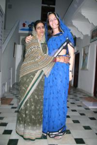

Le 14 décembre 2004,
Nous entamons notre journee par une ascension d’une heure d’une montagne surplombant la ville de Pushkar sous un soleil brulant. Il fait environ 28 degres et nous transpirons bien (petite pensee pour nos proches qui se caillent en France). La montee est difficile, surtout pour moi (meme une grand-mere indienne a reussi a me depasser... je crois que je manque d’exercice !), mais ca en vaut la peine. La vue du sommet est magnifique ! Le lac de Pushkar encastre dans la ville qui se trouve elle-meme encerclee par des montagnes, offrent une tres beau spectacle. Nous mangeons le midi dans un restaurant bien sympathique au milieu d’un grand jardin calme et reposant. Cet endroit nous a ete conseille par un cinquantenaire perpignanais rencontre lors de notre descente de la montagne. Ca sert les rencontes !
 La suite de la journee se passe tranquillement et c’est bien reposant ! Nous repassons a l’hotel en milieu d’apres-midi pour que je puisse me changer et mettre mon beau sari bleu achete a Jaipur. Michael est content que j’accepte enfin de le porter, depuis le temps qu’il me tanne ! Je sors de la chambre fagotee de mon sari, porte un peu n’importe comment je dois dire, je n’ai pas encore pris le coup de main. La gerante de l’hotel, me voyant me debattre avec des bouts de tissus qui trainent et dans lesquels je me prends les pieds, vient a mon secours en riant et entreprant de m’habiller comme il faut. Il ne lui faut pas moins d’un quart d’heure pour enrouler le tissu autour de moi et ainsi me donner l’air de quelque chose. Elle est si minutieuse dans sa facon de plier le sari, c’est incroyable ! Je serais malheureusement incapable de refaire ce qu’elle a fait ! Le resultat est remarquable. Elle me lance alors toutes sortes de compliments en me disant que j’ai l’air d’une princesse, qu’elle me trouve tres jolie et que le sari que j’ai choisi est de toute beaute ! Elle nous explique que ce sont les femmes mariees qui portent le sari afin de pouvoir se cacher les cheveux et le visage lorsqu’elles sont en presence de leur beau-frere s’il est plus vieux qu’elle ou de son beau-pere. Les indiens partent du principe que l’homme est faible et ne peut pas controler ses hormones. C’est donc a le femme de se cacher de lui, afin de ne pas les tenter...
Je me suis achetee ce matin des gommettes a mettre sur le front, entre les 2 yeux, en guise de troisieme oeil. Apparemment, ca n’aurait aucune signification religieuse, les gommettes sont portes a titre decoratif, comme un bijou. J’ai vraiment l’air d’une indienne habillee ainsi et ca me fait un bien fou de porter des vetements plus feminins que d’habitude. Je me sens jolie... C’est vrai que les indiennes ont l’art de savoir se mettre en valeur avec leurs multiples bijoux et leurs couleurs chatoyantes ! Une fois dans la rue, les femmes se retournent en me disant qu’elles me trouvent "pretty", les hommes me sourient. Ils ont l’air plutot contents et flattes qu’une europeenne s’habille conne eux. Tant mieux...
Eve-Laure
{kind=link}